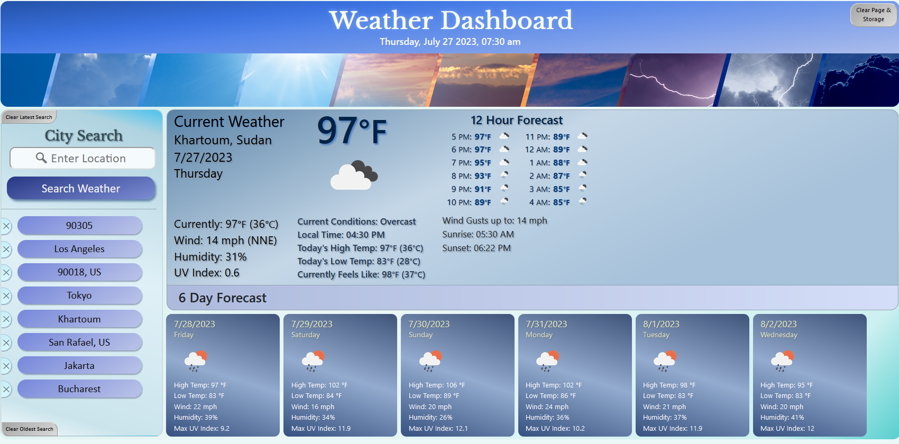
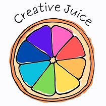
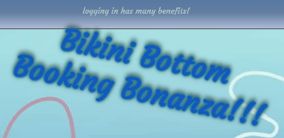

About Me
Hi, my name is Dan McKay. I am a native of Washington DC who has lived in the Bay Area for over 10 years now, and have extensive experience in the non-profit sector helping run the Meals on Wheels program at Vivalon in Marin County. I have long had an interest in computer sciences and web development, and so currently I am in the middle of a giant course change in my life.
Tech Work
I started training in full-stack development in the UC Berkeley Coding Bootcamp in January of 2023. This website is most definitely a work in progress! Selected projects are listed in the following tiles.
Weather Dashboard
After 16 increasingly complex assignments and 3 grueling group projects, in the end my week 6 Weather Dashboard assignment ended up the one I was most proud of. Not for the version I submitted and received a perfect grade on, but for what I continue to build on for two months beyond that across nearly 200 commits, quadrupling the functionality and adding an incredibly polished and beautiful UI and as strong a User Experience as I could wring out of openweathermap.org's API. Please check it out. You can also find the read me here.
Creative Juice
This was my first Group Project at Bootcamp Spot's full-stack coding bootcamp.
As part of BCS's coding bootcamp, this is a site I helped build for helping people with artistic inspiration. I did almost all the CSS styling in coordination with the rest of the team.
Bikini Bottom Booking
This was my second group project at BCS's coding bootcamp. It's my first full stack development product, incorporating APIs and a database with user sign-up and authentication. I was lead on front-end design and styling, and also helped with integrating with the back-end.
Resume & References
This is a work in progress like this site. But for now,
- Primary References
- ● Erika Vaughn (Meals on Wheels Program Manager), Vivalon, San Rafael CA | work #: (415) 456-xxxx Ext. xxx cell #: (415) xxx-xxx
- ● Dr. Judy Kysh (Mathematics Curriculum & Instruction Professor), San Francisco State University | work #: (415) 338-xxxx (work)
- ● Michael Damm (Store Manager), Golden State Lumber, San Rafael CA | current work #: (415) 444-xxxx
Contact Me
- 📱Phone: (202) XXX-XXXX
- ✉️Email: ***********@gmail.com
- Twitter: @********
- 💻GitHub: GitHub.com/DanielFMcKay